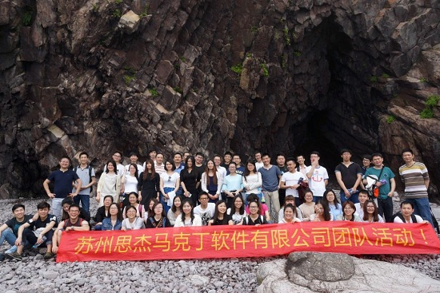
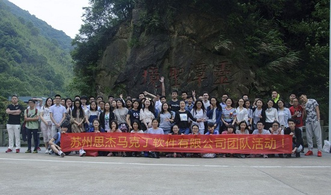
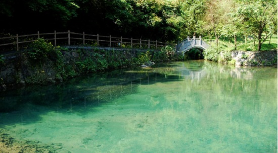
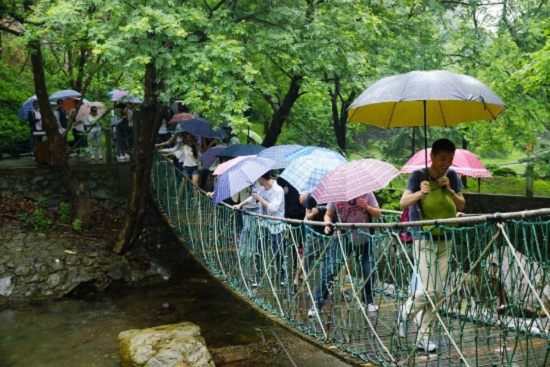
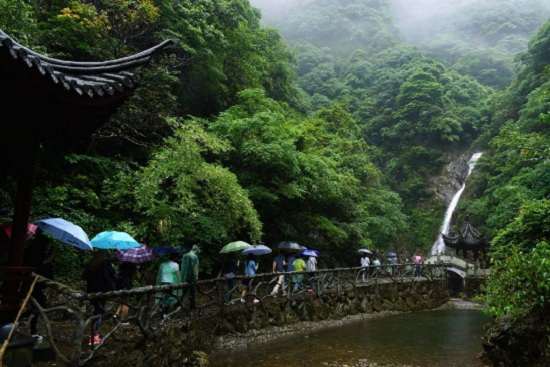
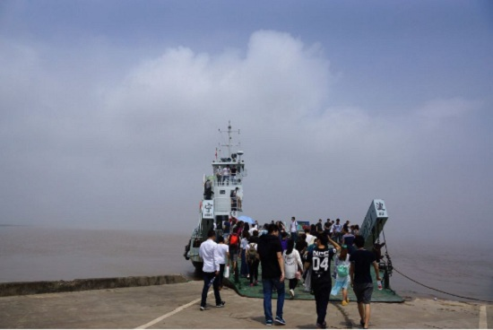
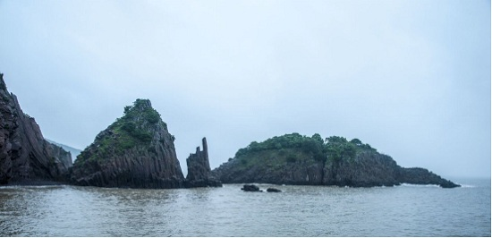
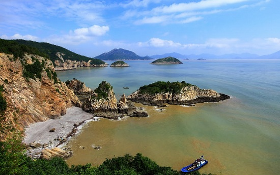
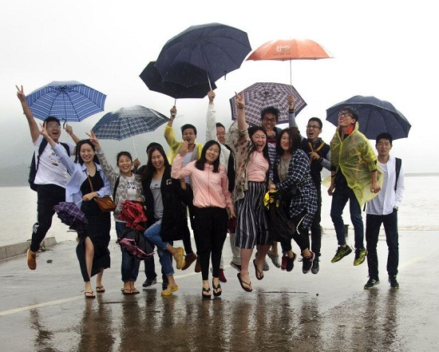
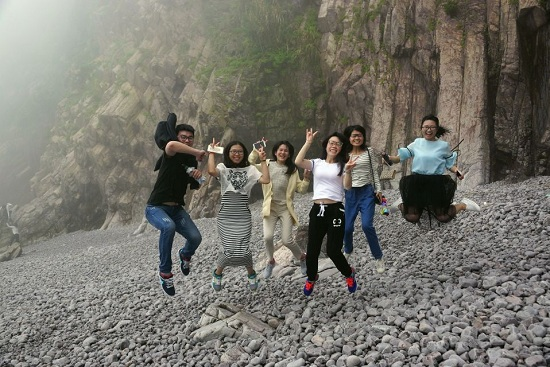

在这如此美好的季节，苏州思杰马克丁软件有限公司秋游活动正式开始！这次的旅行目的地是被誉为“宁波新十景”——五龙潭风景名胜区，也是浙江宁波第一家通过ISO9000国际质量认证体系的旅游风景区。


五龙潭泉系并成为济南四大著名泉群中水质最好的泉群。有水自池底涌出，形成累累串珠的古温泉、东流泉、回马泉、濂泉；有水从碗口粗的泉眼腾涌，水花飞溅，状若趵突的玉泉、青泉、潭西泉；有水从池岸石隙漫溢，跌落清溪，形似瀑飞的宫家池、虬溪泉；还有“地涌千珠乱，天重一镜湖”的天镜泉，“滋味美如饴，一饮似天浆”的蜜脂泉，以及贤清泉、并洗钵泉、睛明泉、七十三泉等名泉。


这里群山环抱，峰峦挺拔，悬崖耸立，溪谷幽深，地形变化丰富，具有浓烈的华夏“龙崇拜”民俗文化特色。

第二天的目的地是世界上三大火山岩原生地貌之一——花岙岛。

一大早起来外面烟雨蒙蒙，这里是素有“海上仙子国、人间瀛洲城”之称的海上天然花岙石林！


游一处风景，寻一处特色；见一处特色，悟一片心得。实践证明，旅游是锻炼身体、开阔眼界、游览风光、广交朋友、认识自然、了解社会的最好时机。


此次公司春游团体活动，小伙伴们都尽情尽兴，如此精彩，如此美景，完美！完美！！